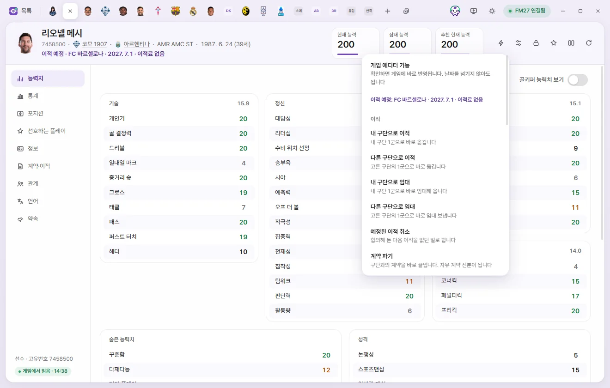
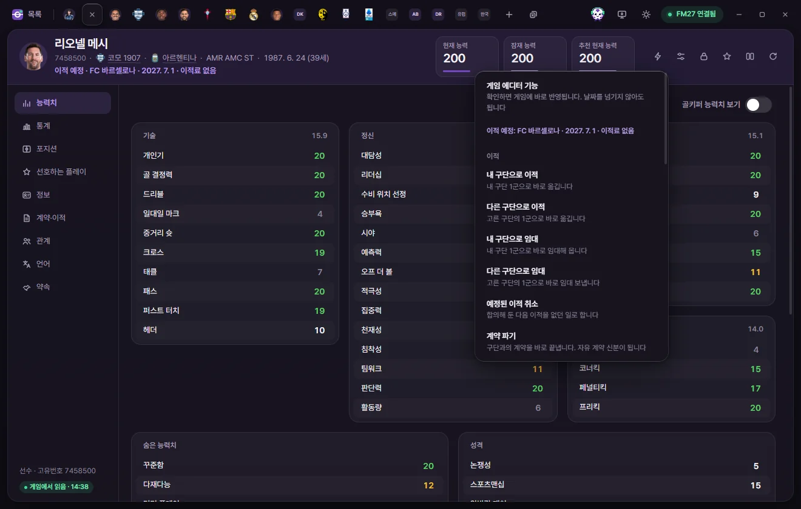
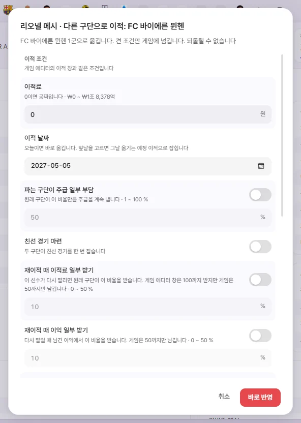
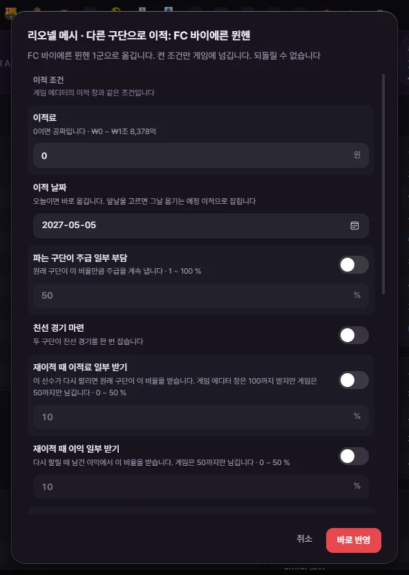

게임 에디터
게임 에디터 (⚡)
편집 탭 위쪽의 ⚡ 단추는 게임에 들어 있는 에디터 기능(이적·임대, 부상·불만 없애기, 계약 파기, 홈그로운 등)을 FMLE에서 바로 실행합니다. 확인하면 날짜를 넘기지 않아도 게임에 바로 반영되고, 되돌릴 수 없습니다.



게임 에디터 기능이란
FM27에는 게임 안 에디터가 들어 있습니다. FMLE의 ⚡ 메뉴는 그 에디터의 기능을 게임 에디터 화면을 열지 않고 같은 방법으로 부릅니다. 그래서 게임이 에디터로 한 것과 똑같이 처리합니다.
- 바로 반영됩니다. 확인 창에서 '바로 반영'을 누르면 그 자리에서 게임이 바뀝니다. 날짜를 넘기지 않아도 되고, '저장'을 누를 필요도 없습니다.
- 되돌릴 수 없습니다. FMLE에는 이 기능의 '되돌리기'가 없습니다. 반대 기능이 있는 것(능력치 고정 ↔ 고정 풀기, 취업 허가 주기 ↔ 빼기 등)은 반대 기능을 다시 실행하면 됩니다.
- 게임 에디터를 쓴 기록이 남습니다. 게임 에디터로 한 것과 같은 기록이 게임에 남습니다.
- 게임이 멈춘 화면에서 쓰세요. 날짜가 진행 중일 때가 아니라 게임이 멈춰 있을 때 쓰라고 처음 확인 창이 안내합니다.
어디에 있나요
- 편집 탭 위쪽 오른쪽의 ⚡ 단추(이름: 게임 에디터 기능). 선수, 스태프, 팀, 구단, 내 감독 탭에만 있습니다. 대회·국가·도시 같은 다른 탭에는 없습니다.
- 목록의 오른쪽 클릭 메뉴에도 '⚡'로 시작하는 묶음이 나옵니다. 한 명을 오른쪽 클릭하면 그 사람의 탭이 열리고 ⚡ 메뉴에서 고른 것과 똑같이 실행됩니다. 여러 명을 고르고 오른쪽 클릭하면 '⚡ 한 번에' 묶음이 나옵니다(여러 명에게 한 번에). 오른쪽 클릭 메뉴 전체는 탭과 빠른 열기·오른쪽 클릭 메뉴에 있습니다.
- 내 감독 탭은 왼쪽 '내 감독·구단'에서 내 감독 이름을 누르면 열립니다.
⚡ 단추는 게임에 연결되어 있고 그 탭을 이 게임에서 읽은 뒤에만 씁니다. 연결되지 않았거나 다른 것을 쓰는 중이면 '지금은 할 수 없습니다'라고 알립니다.
쓰는 순서
- 선수·스태프·팀·구단·내 감독 탭을 엽니다.
- ⚡ 단추를 누르고 메뉴에서 기능을 고릅니다.
- 고를 것이 있는 기능(이적할 구단, 홈그로운 구단, 사기 단계 등)은 다음 메뉴나 조건 창에서 고릅니다.
- 맨 처음 한 번은 '세이브를 백업해 두셨습니까?' 창이 뜹니다. '백업했습니다'를 누르면 다음부터는 묻지 않습니다.
- 기능마다 확인 창이 뜹니다. 제목은 '이름 · 기능', 글은 무엇이 바뀌는지와 '되돌릴 수 없습니다.'입니다. '바로 반영'을 누르면 실행합니다. 취소하면 아무것도 바뀌지 않습니다.
- 끝나면 '…: 게임에 반영했습니다' 알림이 뜨고, 탭이 새 값으로 다시 그려집니다. 왼쪽 '최근 편집'에 '게임 에디터 · 기능 이름'으로 남습니다.
이적·계약 파기·대표팀 관련처럼 큰 기능은 확인 단추가 빨간색입니다.
이름 아래의 '이적 예정'과 '은퇴 예정'
선수·스태프·내 감독 탭은 이름 아래에 게임의 예정 목록을 보여 줍니다(있을 때만).
- 이적 예정 · 구단 · 날짜 · 이적료: 합의해 둔 다음 이적입니다. 계약이 끝날 때 이적료 없이 가기로 한 것은 '이적료 없음'으로 나옵니다. 같은 글이 ⚡ 메뉴 맨 위에도 나옵니다.
- 은퇴 예정 · 날짜: 게임이 정해 둔 은퇴 날짜입니다(선수·스태프).
선수 탭의 메뉴
| 묶음 | 메뉴 | 하는 일 |
|---|---|---|
| 이적 | 내 구단으로 이적 | 내 구단 1군으로 바로 옮깁니다. 조건 창이 뜹니다 |
| 이적 | 다른 구단으로 이적 | 고른 구단의 1군으로 바로 옮깁니다. 조건 창이 뜹니다 |
| 이적 | 내 구단으로 임대 | 내 구단 1군으로 바로 임대해 옵니다. 조건 창이 뜹니다 |
| 이적 | 다른 구단으로 임대 | 고른 구단의 1군으로 바로 임대 보냅니다. 조건 창이 뜹니다 |
| 이적 | 예정된 이적 취소 | 합의해 둔 다음 이적을 없던 일로 합니다. 예정된 이적이 있을 때만 보입니다 |
| 이적 | 계약 파기 | 구단과의 계약을 바로 끝냅니다. 자유 계약 신분이 됩니다 |
| 상태 | 모든 부상 제거 | 부상이 모두 낫고 컨디션·경기 감각이 100%가 됩니다 |
| 상태 | 모든 출장 정지 제거 | 받은 출장 정지가 모두 없어집니다 |
| 상태 | 모든 불만 제거 | 쌓인 불만이 모두 없어집니다 |
| 기록 | 홈그로운 추가 | 구단이나 국가의 홈그로운 선수로 만듭니다. 규칙 9가지 중 하나를 고릅니다 |
| 기록 | 유럽 선수로 인식 | EU·EEA·EFTA 나라 국적을 하나 더해 유럽 선수로 칩니다. 그 나라 대표팀에는 뽑히지 않습니다 |
| 기록 | 능력치 고정 | 능력치가 더 오르지도 내리지도 않습니다 |
| 기록 | 능력치 고정 풀기 | 능력치가 다시 변합니다 |
| 기록 | 취업 허가 주기 | 일할 나라의 취업 허가를 받은 것으로 합니다 |
| 기록 | 취업 허가 빼기 | 받은 취업 허가를 없앱니다 |
| 국적·출생 | 국적 바꾸기 | 주 국적을 고른 나라로 바꿉니다. 이름 기록도 게임이 새 국적에 맞춥니다 |
| 국적·출생 | 출생 도시 바꾸기 | 태어난 도시를 고른 도시로 바꿉니다 |
| 국가대표·병역 | 국가대표 은퇴 | 국가대표팀에서 은퇴한 것으로 합니다. 은퇴 날짜는 오늘이 됩니다 |
| 국가대표·병역 | 국가대표 은퇴 취소 | 국가대표팀 은퇴를 없던 일로 합니다. 다시 대표팀에 뽑힐 수 있습니다 |
| 국가대표·병역 | 병역 마침으로 | 병역을 마친 것으로 기록합니다 |
| 국가대표·병역 | 병역 면제로 | 병역 대상이 아닌 것(면제)으로 기록합니다 |
| 국가대표·병역 | 병역 기록 없애기 | 병역 마침·면제 기록을 지웁니다 |
| 은퇴 | 은퇴 예정일 바꾸기 | 정해 둔 은퇴 날짜를 고른 날로 옮깁니다. 은퇴 예정이 있을 때만 보입니다 |
메뉴는 지금 상태에 맞는 것만 보여 줍니다.
- '국가대표 은퇴'는 은퇴하지 않은 선수에게만, '국가대표 은퇴 취소'는 은퇴한 선수에게만 나옵니다.
- 병역 세 가지는 바꿀 것이 있을 때만 나옵니다. 병역 기록을 바꿔도 지금 복무 중인 선수의 복무를 끝내지는 않습니다.
- '내 구단으로' 두 가지는 내 구단이 있을 때만 나옵니다. 무직 감독이면 나오지 않습니다.
스태프 탭의 메뉴
| 묶음 | 메뉴 | 하는 일 |
|---|---|---|
| 이적 | 내 구단으로 이적 | 내 구단으로 옮깁니다. 직책을 고른 뒤 조건 창이 뜹니다 |
| 이적 | 다른 구단으로 이적 | 고른 구단으로 옮깁니다. 직책을 고른 뒤 조건 창이 뜹니다 |
| 이적 | 계약 파기 | 구단과의 계약을 바로 끝냅니다 |
| 대표팀 | 대표팀에 넣기 | 고른 나라 대표팀에 고른 직책으로 바로 들어갑니다 |
| 대표팀 | 대표팀 계약 파기 | 대표팀과의 계약을 바로 끝냅니다 |
| 인물 | 국적 바꾸기 | 주 국적을 고른 나라로 바꿉니다 |
| 인물 | 출생 도시 바꾸기 | 태어난 도시를 고른 도시로 바꿉니다 |
| 인물 | 여자로 바꾸기 / 남자로 바꾸기 | 스태프의 성별을 바꿉니다. 지금과 다른 쪽 하나만 보입니다 |
| 은퇴 | 은퇴 예정일 바꾸기 | 은퇴 예정이 있을 때만 보입니다 |
팀 탭의 메뉴
팀 탭의 기능은 이 팀과 계약한 선수 모두에게 합니다.
| 묶음 | 메뉴 | 하는 일 |
|---|---|---|
| 선수 전체 | 모든 선수 부상 제거 | 이 팀과 계약한 선수가 모두 낫고 컨디션·경기 감각이 100%가 됩니다 |
| 선수 전체 | 모든 선수 출장 정지 제거 | 이 팀과 계약한 선수 모두의 출장 정지를 없앱니다 |
| 선수 전체 | 모든 선수 불만 제거 | 이 팀과 계약한 선수 모두의 불만을 없앱니다 |
| 선수 전체 | 팀 사기 바꾸기 | 팀과 계약한 선수 모두의 사기를 20단계 중 고른 단계로 바꿉니다 |
| 팀 | 팀 결속력 끌어올리기 | 팀 결속력을 높입니다. 게임 에디터의 팀 결속력 올리기와 같습니다 |
| 팀 | 전술 이해도 최대로 | 모든 선수가 팀 전술을 완전히 익힙니다 |
끝나면 알림에 '선수 N명에게 했습니다'가 함께 나옵니다.
팀 사기 바꾸기는 '20. 완벽함'부터 '1. 최악'까지 20단계에서 고릅니다. 20이 가장 높습니다. 게임이 선수마다 정하는 범위 안에서 맞춥니다.
구단 탭의 메뉴
| 묶음 | 메뉴 | 하는 일 |
|---|---|---|
| 구단 | 라이선스 유니폼 쓰기 | 구단 유니폼에 공식 라이선스 유니폼을 씁니다 |
| 구단 | 라이선스 유니폼 안 쓰기 | 공식 라이선스 유니폼을 쓰지 않습니다 |
| 목표 | 보드 목표 지우기 | 보드가 정해 둔 목표 하나를 골라 없앱니다 |
| 목표 | 서포터 목표 지우기 | 서포터가 바라는 목표 하나를 골라 없앱니다 |
목표 지우기는 구단의 목표 목록을 게임에서 읽어 보여 줍니다. '유소년 육성', '점유 축구', '높은 평판 선수 영입'처럼 이름을 아는 목표는 이름으로, 모르는 것은 '목표 종류 숫자'로 나옵니다. 특정 선수·구단에 관한 목표는 그 이름이 함께 나옵니다. 하나를 고르면 확인 창이 뜹니다.
구단을 오른쪽 클릭하면 '⚡ 구단 선수 전체' 묶음도 나옵니다: 모든 선수 부상 제거, 모든 선수 출장 정지 제거, 모든 선수 불만 제거. 이 구단에서 뛰는 선수 모두에게 한 번에 합니다(여러 명에게 한 번에).
내 감독 탭의 메뉴
| 묶음 | 메뉴 | 하는 일 |
|---|---|---|
| 감독 | 해고 불가능 켜기 / 끄기 | 보드가 이 감독을 해고하지 않습니다. 게임 에디터의 같은 이름 스위치와 같습니다 |
| 감독 | 계약 파기 | 구단과의 계약을 바로 끝냅니다. 무직 감독이 됩니다 |
| 감독 | 대표팀 계약 파기 | 대표팀 감독 계약을 바로 끝냅니다 |
| 감독 | 다른 구단으로 이동 | 고른 구단의 1군 감독으로 바로 옮깁니다 |
| 감독 | 다른 국가대표 팀으로 이동 | 고른 나라 대표팀의 감독으로 바로 들어갑니다 |
| 검색 | 검색에 모든 선수 보이기 / 끄기 | 이 감독의 선수 검색에 모든 선수가 보입니다. 끄면 원래대로 돌립니다 |
| 검색 | 검색에 모든 스태프 보이기 / 끄기 | 이 감독의 스태프 검색에 모든 스태프가 보입니다. 끄면 원래대로 돌립니다 |
- 해고 불가능은 지금 상태에 따라 '켜기' 또는 '끄기'로 나옵니다. 치트 화면의 '내 감독 옵션'에 있는 '해고 불가능'과 같은 값입니다.
- 다른 구단으로 이동은 구단을 고르면 확인 창이 뜹니다. 지금 그 자리의 감독은 물러나고, 계약 조건은 게임이 정합니다.
- 검색에 모든 선수·스태프 보이기가 '검색 설정을 찾지 못했습니다'로 끝나면, 게임에서 선수·스태프 검색 화면을 한 번 연 뒤 다시 해 보세요.
고르는 창들
구단 고르기 (이적·임대·이동)
구단 이름으로 검색하는 메뉴가 뜹니다. 지금 있는 구단은 나오지 않습니다. 이름이 같은 남자 구단과 여자 구단을 가릴 수 있도록 이름 아래에 '여자팀' 또는 '남자팀'과 나라가 나옵니다. 고른 구단의 1군으로 갑니다.
선수 이적 조건 창



게임 에디터의 이적 창과 같은 조건입니다. 줄 오른쪽에 스위치가 있는 조건은 켠 것만 게임에 넘깁니다. 꺼 둔 칸은 회색으로 잠깁니다.
| 칸 | 뜻 |
|---|---|
| 이적료 | 0이면 공짜입니다 |
| 이적 날짜 | 오늘이면 바로 옮깁니다. 앞날을 고르면 그날 옮기는 예정 이적으로 잡힙니다(4년 안) |
| 파는 구단이 주급 일부 부담 | 원래 구단이 이 비율(1~100%)만큼 주급을 계속 냅니다 |
| 친선 경기 마련 | 두 구단이 친선 경기를 한 번 잡습니다 |
| 재이적 때 이적료 일부 받기 | 다시 팔리면 원래 구단이 이 비율을 받습니다. 게임은 50%까지만 남기므로 FMLE도 0~50%만 받습니다 |
| 재이적 때 이익 일부 받기 | 다시 팔릴 때 남긴 이익에서 이 비율을 받습니다(0~50%) |
| 재영입 조항 | 원래 구단이 이 금액에 다시 데려올 수 있습니다 |
그 아래 새 계약 (FMLE 추가 기능) 묶음이 있습니다. 게임 에디터는 옮긴 뒤 주급 0, 만료일 없음으로 둡니다. FMLE는 켠 것만 오늘 옮긴 바로 뒤에 새 계약에 씁니다.
| 칸 | 처음 값 |
|---|---|
| 주급 | 켜져 있고 지금 주급 그대로입니다 |
| 계약 만료일 | 켜져 있고 지금 만료일(이미 지났으면 3년 뒤)입니다 |
| 계약 유형 | 켜져 있습니다 |
| 동의한 출전 시간 | 꺼져 있습니다 |
| 등번호 | 꺼져 있습니다(1~99) |
- 새 계약은 오늘 옮길 때만 씁니다. 이적 날짜를 앞날로 잡으면 새 계약 칸은 쓰지 않습니다.
- 새 계약을 쓰지 못하면 알림에 그 이유와 '계약 칸에서 직접 바꿔 주세요'가 나옵니다. 이적 자체는 이미 된 것입니다.
- 금액은 설정에서 고른 통화로 넣습니다. 범위를 벗어나면 창 아래에 '…사이 숫자로 적어 주세요'가 뜨고 창은 그대로 열려 있습니다.
선수 임대 조건 창
게임 에디터의 임대 창과 같은 조건입니다.
| 칸 | 뜻 |
|---|---|
| 임대 끝나는 날 | 처음 값은 1년 뒤입니다. 내일부터 4년 안에서 고릅니다 |
| 원 소속 구단이 불러들일 수 있음 | 스위치 |
| 컵 경기 출전 허용 | 스위치 |
| 원 소속 구단과의 경기에 출전 가능 | 스위치 |
| 원 소속 구단 B팀과의 경기에 출전 가능 | 스위치 |
| 원 소속 구단 경기에도 출전 가능 | 스위치 |
| 원 소속 구단 2군 경기에도 출전 가능 | 스위치 |
| 원 소속 구단 컵 경기에도 출전 가능 | 스위치 |
| 등번호 | 1~99 |
| 완전 영입 금액 (옵션) | 임대 구단이 이 금액에 완전히 사 갈 수 있습니다 |
| 월 임대료 | 금액 |
| 임대 구단이 내는 주급 비율 | 0~200%. 게임 에디터 창은 128%를 넘으면 값이 깨지지만 FMLE는 고른 숫자를 그대로 넘깁니다 |
| 영입 비용 | 완전 영입 금액을 켤 때만 게임이 받습니다 |
| 일정 경기 출전 뒤 완전 영입 | 1~27경기 |
| 업적 달성 후 구입을 위한 대회 | 임대 구단 나라의 대회 중에서 고릅니다. 임대 구단이 이 대회에서 아래 업적을 이루면 완전히 사 갑니다 |
| 업적 달성 후 구입 | 우승, 승격, 강등 회피 중 하나. 대회를 고르지 않으면 쓰이지 않습니다 |
| 임대를 도중에 끝낼 수 없음 | 스위치 |
스태프 이적: 직책 고르기와 조건 창
- 구단을 고르면 게임이 이 사람에게 주는 직책 목록이 뜹니다(1군, B팀, 유소년 팀 등 직책마다 팀이 함께 나옵니다). 게임이 주지 않는 직책은 나오지 않습니다.
- 직책을 고르면 조건 창이 뜹니다: '이적료(보상금)'(0이면 공짜)과 '새 계약 (FMLE 추가 기능)'의 주급·계약 만료일.
- 감독·선수 겸 감독·수석 코치를 고르면 지금 그 자리에 있는 사람이 물러납니다.
주급을 아직 읽지 못한 사람은 주급 스위치가 꺼진 채 시작합니다. 주급 0으로 옮기는 일이 없게 하려는 것입니다.
대표팀에 넣기 (스태프), 다른 국가대표 팀으로 이동 (내 감독)
- 나라를 검색해서 고릅니다.
- 그 나라의 대표팀 목록이 뜹니다(성인·연령별, 남자·여자).
- 스태프는 이어서 게임이 주는 직책을 고릅니다. 감독·수석 코치를 고르면 지금 그 자리의 사람이 물러납니다. 직책에 따라 게임이 구단 일을 끝낼 수도 있습니다.
- 내 감독은 직책을 고르지 않고 감독으로 들어갑니다.
- 확인 창에서 '바로 반영'을 누릅니다. 계약 조건은 게임이 정합니다.
그 대표팀 감독이 사람 감독이면 감독 자리로는 넣지 않습니다.
홈그로운 추가
- 위쪽에서 '구단' 또는 '국가'를 고릅니다.
- 규칙을 고릅니다. 규칙은 그 구단·나라에 몇 살에 몇 년 있었는지입니다.
- 아래에서 이름을 검색해 구단이나 국가를 누르면 확인 창이 뜹니다.
| 규칙 |
|---|
| 15~21세에 3년 |
| 21세 전 3년 |
| 0~23세에 3년 |
| 0~17세에 3년 |
| 15~21세에 3년 (임대 제외) |
| 0~19세에 4년 |
| 15~21세에 2년 |
| 0~19세에 1년 |
| 15~21세에 1년 |
이미 그 구단·국가의 홈그로운 기록이 있으면 하지 않고 알립니다.
유럽 선수로 인식
EU·EEA·EFTA(유럽연합, 유럽경제지역, 유럽 자유 무역 연합)에 지금 들어 있는 나라만 나옵니다. 선수가 이미 가진 국적은 빠집니다. 나라를 고르면 그 나라 국적이 '국가대표 차출 불가'로 하나 더해집니다.
- EU 선수 규칙에서는 유럽 선수로 칩니다.
- 그 나라 대표팀 선발에는 들어가지 않습니다.
- 나라마다 정한 EU 규칙과 취업 허가 판정은 게임이 그대로 합니다.
국적 바꾸기, 출생 도시 바꾸기
이름으로 검색해 고릅니다. 지금 국적·도시는 목록에 나오지 않습니다. 도시는 이름이 같은 곳이 많아 나라가 함께 나옵니다. 국적을 바꿔도 다른 국적 목록과 국가대표 자격 기록은 그대로입니다.
은퇴 예정일 바꾸기
지금 은퇴 날짜가 적힌 날짜 칸이 뜹니다. 오늘 다음 날부터 고를 수 있습니다. 날짜를 고르고 '바꾸기'를 누르면 확인 창이 뜹니다. 은퇴를 아예 막으려면 치트의 '은퇴 막기'를 쓰세요.
여러 명에게 한 번에
다음 기능은 여러 명에게 한 번에 쓸 수 있습니다. 고를 것이 없고 그 사람 혼자만 바뀌는 기능입니다.
- 선수: 모든 부상 제거, 모든 출장 정지 제거, 모든 불만 제거, 능력치 고정, 능력치 고정 풀기, 취업 허가 주기, 취업 허가 빼기, 국가대표 은퇴, 국가대표 은퇴 취소, 병역 마침으로, 병역 면제로, 병역 기록 없애기
- 스태프: 여자로 바꾸기, 남자로 바꾸기
쓰는 길은 세 가지입니다.
- 목록에서 여러 명을 고르고 오른쪽 클릭 → '⚡ 한 번에' 묶음에서 고릅니다.
- 구단을 오른쪽 클릭 → '⚡ 구단 선수 전체'(부상·출장 정지·불만 제거). 그 구단에서 뛰는 선수 모두에게 합니다. 여러 구단을 골라도 됩니다.
- 프리셋에 넣기: 프리셋의 동작으로 '게임 에디터 기능 (바로 반영)'을 고를 수 있습니다. 값 바꾸기와 함께 한 번에 적용됩니다(프리셋).
어느 길이든 'N명에 ‘기능’ 적용' 확인 창이 한 번 뜹니다. 한 사람씩 차례로 실행하고, 진행 상황이 '게임 에디터 기능 반영 중 N / 전체'로 나옵니다. 이미 그 상태인 사람은 그대로 둡니다. 끝나면 알림에 성공·실패 수가 나옵니다.
잘 안 될 때
실패하면 '…: 하지 못했습니다' 알림에 이유가 나옵니다. 자주 보는 것들입니다.
| 알림 | 뜻과 할 일 |
|---|---|
| 지금은 할 수 없습니다 | 게임에 연결되지 않았거나 다른 것을 쓰는 중입니다. 연결된 뒤 다시 해 주세요 |
| 아직 게임에서 읽지 못했습니다 | 탭이 아직 게임 값을 읽지 않았습니다. 탭에서 다시 해 주세요 |
| 이미 그렇게 되어 있어서 바꿀 것이 없습니다 | 오른쪽 클릭 메뉴에서 고른 기능이 이미 그 상태입니다 |
| 게임이 이적을 받아들이지 않았습니다 | 구단 규칙이나 등록 인원 같은 이적 조건에 걸렸을 수 있습니다 |
| 지금 있는 구단으로는 옮기거나 임대할 수 없습니다 | 같은 구단을 골랐습니다 |
| 이 사람에게는 끝낼 계약이 없습니다 | 이미 자유 계약·무직입니다 |
| 사람 감독이 여러 명이라 누구로 할지 정하지 못했습니다 | 메뉴 맨 위 '내 감독 고르기'로 고르세요 |
| 게임 화면이 아직 준비되지 않았습니다 | 게임 화면을 한 번 연 뒤 다시 해 주세요 |
| 게임이 지금 이 기능을 받지 않는 상태입니다 | 팀 결속력·전술 이해도·대표팀 사기. 위 팀 탭 설명을 보세요 |
| 게임 기능은 이미 실행했으니 다시 읽어서 결과를 확인해 주세요 | 게임 쪽은 실행됐지만 결과를 FMLE가 확인하지 못했습니다. 탭의 '게임에서 다시 읽기'를 누르세요 |
다른 문제는 문제가 생겼을 때를 보세요.